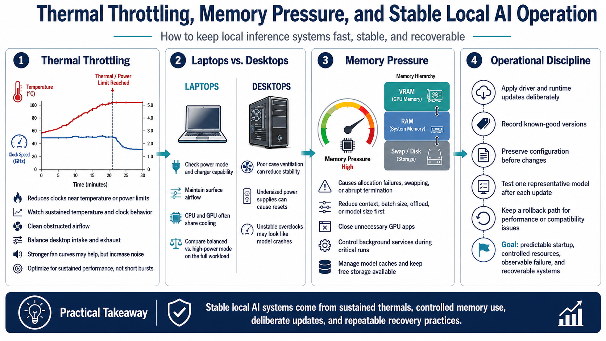

Reliability, Thermals, and Operations
Connecting to LMS... Progress: in progress

Narration
Thermal throttling reduces clocks when hardware approaches temperature or power limits. A system may start quickly and slow after several minutes. Monitor sustained temperature and clock behavior, clean obstructed airflow, and verify that desktop intake and exhaust paths are balanced. More aggressive fan curves may improve clocks at the cost of noise. Optimize for a sustainable operating point rather than a short burst.
Laptops require special attention to power mode, charger capability, surface airflow, and shared cooling between CPU and GPU. Maximum-performance mode can increase heat enough to reduce long-run efficiency. Compare balanced and high-power modes on the complete workload. On desktops, unstable overclocks, undersized power supplies, and poor case ventilation can appear as model crashes or device resets.
Memory pressure causes allocation failures, heavy swapping, or abrupt termination. Reduce context, batch, offload, or model size before treating crashes as random software defects. Close unnecessary GPU applications and control background services during critical runs. Manage model caches so storage does not fill unexpectedly, and retain enough free space for downloads and temporary files.
Apply driver and runtime updates deliberately. Record known-good versions, preserve configuration, and test one representative model after a change. Keep a rollback path when new software changes performance or compatibility. Operational discipline turns a tuned experiment into a dependable tool: predictable startup, controlled resources, observable failure, and recovery without rebuilding the environment from memory.